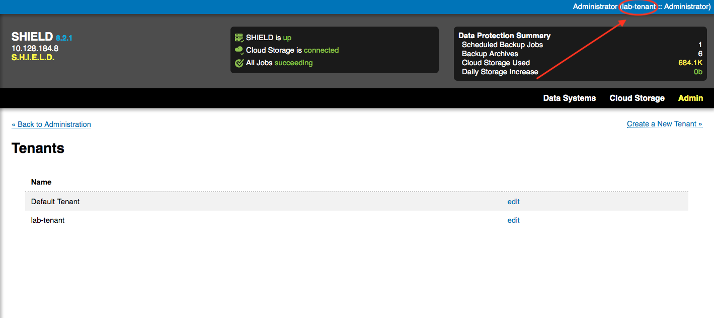

So previously in the SHIELD blog series we’ve taken a look at evaluating SHIELD with docker compose as well as deploying SHIELD to bosh via genesis or to kubernetes. Let’s talk today about the concepts and primitives that are essential for SHIELD administration and operation. Our goal for today is to take a dive in and get a more holistic view of the SHIELD and it’s parts.
Tennants
Creating a tenant is one of the first things we do after our first login to SHIELD. Tenants are used in SHIELD to allow multiple teams to work on the same installation without interfering with each others systems. In addition to organizing our data systems, tenants allow us to set up role based users and permissions that you can distribute to engineers and administrators within your team or organization. In addition to basic authentication SHIELD can also be configured to use UAA or Github auth. You can see what tenant you're in currrently in the top right corner of the screen next to your user as seen below.

Stores
One of the next primitives you will run into when configuring your SHIELD installation is cloud storage. A store is a configured object store where SHIELD will keep and retrieve your backups. Ideally this is an off site storage solution like S3 for safe keeping. Stores are configured in SHIELD using a variety of storage plugins. Storage plugins represent the currently supported backend stores that SHIELD can utilize. Currently SHIELD has plugins to support S3 (and S3 compatible stores like Minio), Webdav, Azure, Google, and Backblaze. Internal to SHIELD stores can be configured two ways, as a shared store and as a private store. Shared stores are accessible to all tenants while any private store is scoped to the tenant it was configured in.

Targets
Once you have a storage backend configured you are ready to start setting up your backups. A target represents the configuration for a data system ready to start getting backed up. Targets are created via the webui wizard or from a SHIELD import cli command. The types of systems that can be backed up with SHIELD is determined by the backup plugins currently available.
Currently, SHIELD supports the following:
- Local Filesystem
- Mysql
- PostgreSQL
- MongoDB
- Cassandra
- Consul
- BBR
- Vault
- Cloud Foundry Service Brokers (postgresql, redis, rabbitmq)
Jobs
Once you've configured your data system as a target the wizard will prompt you for details on how you want to back up this system. Jobs are the “how and when” for SHIELD backups. Information like when the backup will run, how long the backup will stay in storage, and whether or not the at rest encryption for the target will use fixed or randomized keys. SHIELD targets can have multiple jobs associated in case you want a daily backup that only lasts a few days in addition to a weekly backup that lasts much longer.
Archives
Once a job has run to completion and succeeded you can find the resulting archive as well as any others listed on the target’s page. Important metadata can be found about an archive like it’s UUID, creation date, which store it’s located in, it’s valid/purged status, and it’s size. Size can be particularly useful as quick validation on an archive. If you’re backing up a directory that contains some large files and binaries with the filesystem plugin for example, a resulting archive that is 10kb is more than likely misconfigured.

Conclusion
Hopefully after today you have a better understanding of the pieces and components that are used in day to day shield operation and administration. If you ever have any further questions or just want to say hi feel free to reach out on slack!